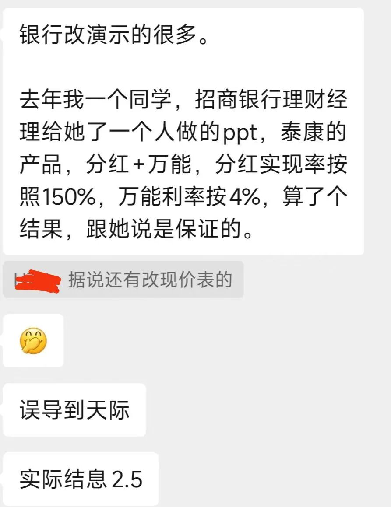
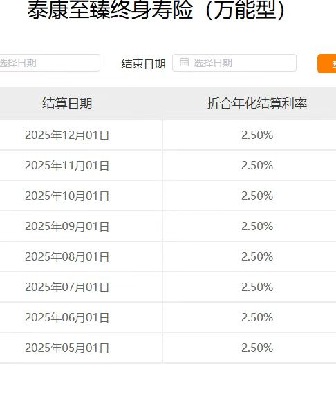
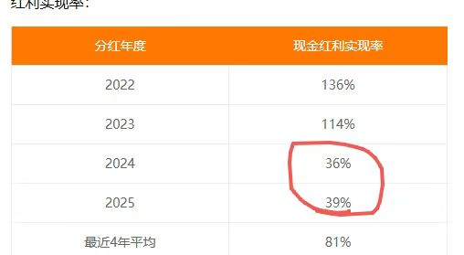
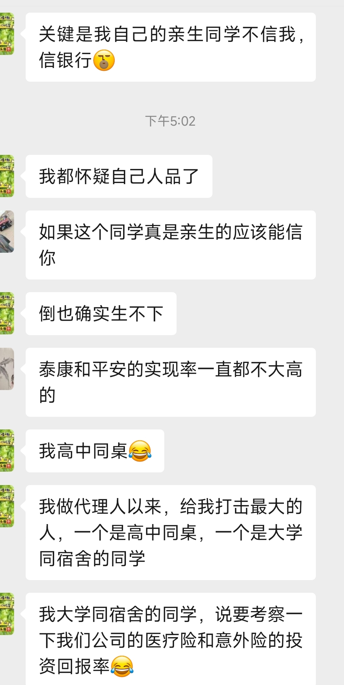

招商银行销售保险的路子有多野？透支银行信用为保司站台能走多远？
不废话，直接上干货：
1. 为什么招商银行销售保险的路子这么野？

从朋友圈图片信息来看，“野路子”主要体现在销售过程中存在严重的不实宣传和误导行为，具体证据链如下：
虚假承诺：第一张图显示，理财经理在演示时，将产品的分红实现率拔高至150%，并将万能账户的演示利率设定为4%，并声称是“保证的”。
这是一种典型的利用客户对银行信任、对未来收益进行夸大承诺的行为。
与现实严重不符：

第二张图显示，该款“泰康至臻终身寿险（万能型）”在2025年5月至12月的实际结算利率仅为2.5%，与演示的4%相差甚远。

第三张图显示，相关产品的“现金红利实现率”在2024年和2025年骤降至36%和39%，远低于演示时采用的150%，也低于近四年81%的平均水平。
行业乱象：
聊天记录中还提到了“改现价表”（即篡改保单的现金价值表），这说明此类误导行为可能并非个例，而是一种为达成销售目的而采取的违规操作。
核心原因：
这种“野路子”的根源在于激励机制的扭曲和销售环节的失控。
银行客户经理面临中间业务收入（保险销售提成）的业绩压力，而部分复杂保险产品（尤其是带有分红、万能账户的产品）提供了较高的佣金。
在销售时，利用信息不对称，通过精心修饰的演示数据（高演示利率、高分红率）来吸引客户，弱化或隐瞒产品的非保证收益特性和实际历史收益水平，从而快速促成交易。
2. 是在透支银行信用为保险公司站台（销售保险、创造银行中间收入）吗？
是的，这种行为本质上就是在严重透支银行信用。
信用嫁接：
客户是基于对“招商银行”这个金融机构的信任，才接受了其理财经理的推荐。
银行利用自身的信誉和客户关系，为合作的保险产品进行了隐性背书。
信用变现与损耗：
当银行员工以不实信息销售保险时，是在将银行的信用“变现”为销售业绩。
一旦产品实际收益远低于宣传（如2.5%对比4%），或分红实现率骤降（如150%演示对比36%现实），客户感到受骗，其不满和信任崩塌的直接对象是银行，而非背后的保险公司。

第四张图中，那位保险代理人的同学“信银行不信代理人”，正是银行信用被利用的体现，而最终的结果是银行的信用被消耗。
为谁站台：
这种行为短期看是为保险公司“站台”输送了保费，但长期看，是以损害银行自身声誉和客户关系为代价的。
当信任破裂，银行的金融超市功能也会受到质疑。
3. 禁止银行卖保险可行吗？
不可行，且“一刀切”的禁止并非解决问题的最佳途径。
渠道价值：
银行拥有庞大的客户基础、广泛的物理网点和深厚的客户信任，是保险产品（特别是储蓄型、理财型保险）重要的销售和服务渠道。
完全禁止会切断一个有效的金融产品流通途径，也不利于满足部分客户通过银行渠道配置保险的需求。
问题核心：
问题的症结不在于“银行卖保险”，而在于“如何规范地卖”。
当前乱象源于销售误导、信息披露不充分、投资者教育不足以及业绩考核的压力。
应采取的规范措施：
强化信息披露与演示规范：
严格监管演示利率的假设，必须采用保守、中档、高档三档演示，并显著提示“演示利益基于假设，不代表未来实际收益”。
必须像第三张图那样，清晰展示产品的历史分红实现率或结算利率，让客户有客观参照。
落实“双录”和风险提示：
严格执行销售过程录音录像，确保将产品属性、收益非保证、退保损失等关键风险点明确告知客户。
改革考核机制：
降低短期销售激励在考核中的权重，引入客户投诉、销售品质等长期指标，避免“唯销量论”。
严惩违规行为：
对“改演示”、“改现价表”等欺诈行为进行严厉处罚，追究机构和个人责任。
路在何方？
招商银行此类销售乱象，是银保渠道在激进扩张中，为追求短期业绩而牺牲诚信规范和长期信誉的典型表现。
它确实在透支银行信用为保险产品站台，最终损害的是金融行业的整体公信力。
治理之道并非简单禁止，而在于强化监管、规范销售行为、加强消费者保护，让银行渠道回归到专业、透明、负责的代销本质，真正成为客户资产配置的可靠助手，而非误导销售的重灾区。
往期文章精选：
这家银行，将保险销售套路推到新高度代理人大量脱落，银行能够扛动保险销售的大旗吗？代理人完成使命离开行业，银行人接过保险KPI
本文由 ShawnCH（何智翔）轉發，透過微信聊天記錄自動提取並整理。 原文連結：https://mp.weixin.qq.com/s?__biz=MzU2ODc1NDY4Mg==&mid=2247512068&idx=1&sn=44c3493d75ddb4f1289519c74e76a746&chksm=fd8b025ba0a386b403a78f686a5d516119853d7f420f506a29f7cc297553412209f0551e10ed&mpshare=1&scene=1&srcid=1212j6TYSJYfM2f8V8iejtKj&sharer_shareinfo=e895d13f78b9d54178caa96f142a94c1&sharer_shareinfo_first=e895d13f78b9d54178caa96f142a94c1#rd